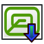

CAM Workbench

Wprowadzenie
Środowisko pracy  CAM jest używane do tworzenia instrukcji maszynowych dla maszyn CNC z modelu 3D FreeCAD. Instrukcje te wytwarzają rzeczywiste obiekty 3D na maszynach CNC, takich jak frezarki, tokarki, wycinarki laserowe i podobne. Zazwyczaj instrukcje są dialektem G-code. Przedstawiono tu ogólny przykład symulacji sekwencji ścieżki narzędzia tokarki CNC.
CAM jest używane do tworzenia instrukcji maszynowych dla maszyn CNC z modelu 3D FreeCAD. Instrukcje te wytwarzają rzeczywiste obiekty 3D na maszynach CNC, takich jak frezarki, tokarki, wycinarki laserowe i podobne. Zazwyczaj instrukcje są dialektem G-code. Przedstawiono tu ogólny przykład symulacji sekwencji ścieżki narzędzia tokarki CNC.

Przepływ pracy środowiska FreeCAD CAM tworzy te instrukcje maszynowe w następujący sposób:
-
Model 3D jest obiektem bazowym, zwykle tworzonym przy użyciu jednego lub więcej środowisk pracy
 Projekt Części,
Projekt Części,  Część lub
Część lub  . Rysunek Roboczy.
. Rysunek Roboczy. -
W środowisku CAM tworzone jest Zadanie. Zawiera ono wszystkie informacje potrzebne do wygenerowania niezbędnego G-kodu do obróbki zadania na frezarce CNC: jest materiał magazynowy, frezarka ma określony zestaw narzędzi i wykonuje określone polecenia kontrolujące prędkość i ruchy (zwykle G-kod).
-
Narzędzia są wybierane zgodnie z wymaganiami zadania.
-
Ścieżki frezowania są tworzone przy użyciu np. operacji konturu i kieszeni. Te obiekty CAM używają wewnętrznego dialektu G-code FreeCAD, niezależnego od maszyny CNC.
-
Wyeksportuj zadanie z G-kodem, dopasowanym do Twojej maszyny. Ten krok nazywany jest postprocesowaniem. Dostępne są różne postprocesory.
Koncepcje ogólne
Środowisko pracy CAM generuje G-kod definiujący ścieżki wymagane do frezowania projektu reprezentowanego przez model 3D na docelowej frezarce w wewnętrznym formacie G-Code programu FreeCAD, który jest następnie tłumaczony na odpowiedni dialekt dla docelowego sterownika CNC poprzez wybór odpowiedniego postprocesora.
G-kod jest generowany na podstawie dyrektyw i operacji zawartych w zadaniu CAM. Obieg zadań zawiera ich listę w kolejności, w jakiej będą wykonywane. Listę tę tworzy się, dodając Operacje CAM, wykończenia CAM, Polecenia uzupełniające CAM i Modyfikacje CAM z menu CAM lub przycisków graficznego interfejsu użytkownika.
Środowisko pracy CAM udostępnia menedżera narzędzi (bibliotekę, tabelę narzędzi), narzędzia do inspekcji G-kodu oraz symulacji. Łączy się z postprocesorem i umożliwia importowanie i eksportowanie szablonów zadań.
Środowisko CAM ma zewnętrzne zależności, w tym:
-
Jednostki modelu FreeCAD 3D są zdefiniowane w . Konfiguracja Postprocessora definiuje jednostki wynikowe G-kodu.
-
Ścieżka do pliku Makrodefinicji oraz tolerancje geometryczne są zdefiniowane w zakładce .
-
Kolory są definiowane w zakładce .
-
Parametry znaczników trzymania definiuje się w zakładce .
-
To, że jakość modelu Base 3D jest zgodna z wymaganiami środowiska CAM, potwierdza Sprawdzenie geometrii.
Ograniczenia
Niektóre z obecnych ograniczeń, o których należy pamiętać, to:
-
Większość narzędzi CAM nie jest prawdziwymi narzędziami 3D, a jedynie 2,5D. Oznacza to, że przyjmują one ustalony kształt 2D i mogą go przyciąć do określonej głębokości. Istnieją jednak dwa narzędzia, które tworzą prawdziwe ścieżki 3D:
 Kieszeń 3D i
Kieszeń 3D i  Powierzchnia 3D.
Powierzchnia 3D. -
Większość środowiska pracy CAM jest zaprojektowana dla standardowej, prostej, 3-osiowej (xyz) frezarki / routera CNC, ale narzędzia tokarskie są wspierane poprzez dodatek Toczenie.
-
Większość operacji w środowisku pracy CAM zwróci ścieżki oparte tylko na standardowym narzędziu / bicie, niezależnie od typu narzędzia / bita przypisanego w danym kontrolerze narzędzia. introduced in 26.3:
 Grawer, powierzchnia 3D i inne operacje teraz wspierają uwzględnianie kształtu narzędzia.
Grawer, powierzchnia 3D i inne operacje teraz wspierają uwzględnianie kształtu narzędzia. -
Operacje wykonywane w środowisku pracy CAM nie uwzględniają mechanizmów mocujących, które są używane do mocowania modelu na maszynie. W związku z tym przed wysłaniem kodu do maszyny należy przejrzeć i zasymulować generowane ścieżki. Jeśli to konieczne, wymodeluj mechanizmy mocujące w programie FreeCAD, aby lepiej sprawdzić wygenerowane ścieżki. Zwróć uwagę na ewentualne kolizje z zaciskami lub innymi przeszkodami na ścieżkach.
Jednostki
Obsługa jednostek w środowisku CAM może być myląca. Należy zrozumieć kilka kwestii:
-
Jednostkami podstawowymi FreeCAD dla długości i czasu są odpowiednio "mm" i "s". Prędkość jest więc "mm / s". To jest to, co FreeCAD przechowuje wewnętrznie, niezależnie od wszystkiego innego.
-
Domyślny schemat jednostek używa jednostek domyślnych. Jeśli używasz domyślnego schematu i wprowadzasz prędkość posuwu bez łańcucha jednostek, zostanie ona wprowadzona jako "mm/s".
-
Większość maszyn CNC oczekuje prędkości posuwu w postaci "mm / min" lub "in / min". Większość postprocesorów automatycznie konwertuje jednostkę podczas generowania G-kodu.
Schematy:
-
Zmiana schematu w preferencjach zmienia domyślny ciąg jednostek dla pól wejściowych. Jeśli jesteś użytkownikiem CAM i wolisz projektować w jednostkach metrycznych, zalecane jest użycie schematu "Metryczny drobne części i CNC". Jeśli projektujesz w jednostkach amerykańskich, możesz użyć schematu Calowy dziesiętny lub Budowlany US.
-
Zmiana preferowanego schematu jednostek nie będzie miała wpływu na wynik, ale pomoże uniknąć błędów przy wprowadzaniu danych.
Wyjście:
-
Generowanie poprawnej jednostki na wyjściu jest zadaniem postprocesora i jest wykonywane tylko w tym czasie.
-
Jednostka wyjściowa maszyny jest całkowicie niezwiązana z wybranym przez użytkownika schematem jednostek.
-
Postprocesory generują dane wyjściowe w systemie metrycznym (G21), imperialnym (G20) lub są konfigurowalne.
-
Konfigurowalne postprocesory domyślnie produkują dane metryczne (G21).
-
Jeśli chcesz, aby twój konfigurowalny postprocesor generował G-code imperialny (G20), ustaw odpowiedni argument w konfiguracji wyjścia zadania (np. --inches dla linuxcnc). Można to zapisać w szablonie zadania i ustawić jako szablon domyślny, aby działało to automatycznie dla wszystkich przyszłych zadań.
Inspekcja CAM:
-
Jeśli użyjesz narzędzia Inspekcja CAM do obejrzenia G-kodu, zobaczysz go w "mm / s", ponieważ nie jest on poddawany obróbce postprocesora.
Wysokość i głębokość
Wiele poleceń ma zróżnicowaną wysokość i głębokość:

Wizualne odniesienie do właściwości głębokości ''( ustawienia)''
Polecenia
Niektóre polecenia są eksperymentalne i nie są domyślnie dostępne. Aby je włączyć, zobacz stronę Funkcje eksperymentalne.
Polecenia projektu
-
 Zadanie: Tworzy nowe zadanie obróbki CNC.
Zadanie: Tworzy nowe zadanie obróbki CNC. -
Sprawdź, czy zadanie CAM nie zawiera typowych błędów: Sprawdza, czy w wybranym zadaniu nie występują brakujące wartości.
-
 Post Process: Eksportuje projekt do G-kodu.
Post Process: Eksportuje projekt do G-kodu. -

PSelektywne przetwarzanie końcowe: do zrobienia introduced in 26.3 -
 Eksport szablonu: Eksportuj aktualne zadanie jako szablon.
Eksport szablonu: Eksportuj aktualne zadanie jako szablon.
Polecenia narzędzi
-
 CAM SymulatorGL: Uruchamia nowy, ulepszony symulator CAM. introduced in 1.0
CAM SymulatorGL: Uruchamia nowy, ulepszony symulator CAM. introduced in 1.0 -
 Symulator CAM: Przedstawia operację frezowania w sposób, w jaki jest ona wykonywana na maszynie.
Symulator CAM: Przedstawia operację frezowania w sposób, w jaki jest ona wykonywana na maszynie. -
 Przeglądaj polecenia CAM: Wyświetla G-kod do weryfikacji.
Przeglądaj polecenia CAM: Wyświetla G-kod do weryfikacji. -
 Zakończ zaznaczanie pętli: Uzupełnia pętlę na podstawie dwóch wybranych krawędzi.
Zakończ zaznaczanie pętli: Uzupełnia pętlę na podstawie dwóch wybranych krawędzi. -
 Przełącz aktywność operacji: Aktywuje lub dezaktywuje operację na ścieżce.
Przełącz aktywność operacji: Aktywuje lub dezaktywuje operację na ścieżce. -
 Edytor biblioteki narzędzi: Otwiera edytor do zarządzania bibliotekami końcówek narzędzi.
Edytor biblioteki narzędzi: Otwiera edytor do zarządzania bibliotekami końcówek narzędzi. -
 Dodaj końcówkę narzędzia…: Otwiera selektor końcówek narzędzi.
Dodaj końcówkę narzędzia…: Otwiera selektor końcówek narzędzi.
Operacje podstawowe
-
 Profil: Tworzy operację profilowania całego modelu albo jednej lub kilku wybranych powierzchni lub krawędzi.
Profil: Tworzy operację profilowania całego modelu albo jednej lub kilku wybranych powierzchni lub krawędzi. -
 Kształt kieszeni: Tworzy operację kieszeni z jednej lub kilku wybranych kieszeni.
Kształt kieszeni: Tworzy operację kieszeni z jednej lub kilku wybranych kieszeni. -
 Obróbka powierzchni: Tworzy ścieżkę obróbki powierzchni.
Obróbka powierzchni: Tworzy ścieżkę obróbki powierzchni. -
 Helisa: Tworzy ścieżkę o kształcie helisy.
Helisa: Tworzy ścieżkę o kształcie helisy. -
 Algorytm adaptacyjny: Tworzy operację dostosowania oczyszczania i profilowania.
Algorytm adaptacyjny: Tworzy operację dostosowania oczyszczania i profilowania. -
 Rowek: Tworzy operację szczelinowania na podstawie wybranych elementów lub punktów niestandardowych. funkcja eksperymentalna.
Rowek: Tworzy operację szczelinowania na podstawie wybranych elementów lub punktów niestandardowych. funkcja eksperymentalna. -
Owierty: Przeprowadza cykl wiercenia.
-
Frezowanie gwintów: Tworzy operację CAM frezowania gwintów na podstawie cech obiektu bazowego.
-
Grawer: Tworzy trasę grawerowania.
-
Usuwanie zadziorów: Tworzy ścieżkę usuwania zadziorów.
-
Wycięcie V: Tworzy ścieżkę grawerowania przy użyciu kształtu narzędzia V.
Operacje przestrzenne
-
 Kieszeń 3D: Tworzy ścieżkę dla kieszeni 3D.
Kieszeń 3D: Tworzy ścieżkę dla kieszeni 3D. -
Powierzchnia 3D: Tworzy ścieżkę dla powierzchni 3D. funkcja eksperymentalna.
-
Linia poziomu: Tworzy ścieżkę linii poziomu dla powierzchni 3D. Experimental.
Wykończenia ścieżki
-
 Szyk: do zrobienia introduced in 1.1
Szyk: do zrobienia introduced in 1.1 -
Odwzorowanie osi: Odwzorowuje jedną oś na drugą.
-
 Kontur: Dodaje ulepszenie obrysu krawędzi do wybranej ścieżki.
Kontur: Dodaje ulepszenie obrysu krawędzi do wybranej ścieżki. -
 Nadcięcie w narożnikach: Dodaje modyfikację nadcięcia narożników do wybranej ścieżki.
Nadcięcie w narożnikach: Dodaje modyfikację nadcięcia narożników do wybranej ścieżki. -
 Rylec: Dodaje modyfikację dla noża do przeciągania do wybranej ścieżki.
Rylec: Dodaje modyfikację dla noża do przeciągania do wybranej ścieżki. -
 Wprowadzenie / wyprowadzenie: Dodaje punkt wejścia i / lub wyjścia do wybranej ścieżki.
Wprowadzenie / wyprowadzenie: Dodaje punkt wejścia i / lub wyjścia do wybranej ścieżki. -
 Odbicie lustrzane: do zrobienia introduced in 26.3
Odbicie lustrzane: do zrobienia introduced in 26.3 -
 Parkowanie narzędzia: Dodaje modyfikację wejścia na rampę do wybranej ścieżki.
Parkowanie narzędzia: Dodaje modyfikację wejścia na rampę do wybranej ścieżki. -
 Pola mocujące: Dodaje modyfikację mostka przytrzymującego do wybranej ścieżki.
Pola mocujące: Dodaje modyfikację mostka przytrzymującego do wybranej ścieżki. -
 Korekta głębokości Z: Koryguje głębokość Z przy użyciu mapowania sondy.
Korekta głębokości Z: Koryguje głębokość Z przy użyciu mapowania sondy.
Polecenia uzupełniające
-
Komentarz: Wstawia komentarz do G-kodu ścieżki.
-
 Stop: Wstawia instrukcję pełnego zatrzymania maszyny.
Stop: Wstawia instrukcję pełnego zatrzymania maszyny. -
 Wstawka Gcode: Wstawia G-kod użytkownika.
Wstawka Gcode: Wstawia G-kod użytkownika. -
 Sonda: Tworzy siatkę pomiarową z zasobu zadania.
Sonda: Tworzy siatkę pomiarową z zasobu zadania. -
 G-kod z kształtu: Tworzy obiekt ścieżki z wybranego obiektu części. funkcja eksperymentalna.
G-kod z kształtu: Tworzy obiekt ścieżki z wybranego obiektu części. funkcja eksperymentalna.
Modyfikacja ścieżki
-
Kopia: Tworzy parametryczną Kopię wybranego obiektu ścieżki.
-
 Szyk: Tworzy szyk przez powielanie wybranej ścieżki.
Szyk: Tworzy szyk przez powielanie wybranej ścieżki. -
 Szybka kopia: Tworzy nieparametryczną kopię wybranego obiektu ścieżki.
Szybka kopia: Tworzy nieparametryczną kopię wybranego obiektu ścieżki.
Różności
-
 Obszar: Tworzy obszar charakterystyczny z wybranych obiektów. funkcja eksperymentalna.
Obszar: Tworzy obszar charakterystyczny z wybranych obiektów. funkcja eksperymentalna. -
 Obszar płaszczyzny roboczej: Tworzy płaszczyznę roboczą obszaru cechy. funkcja eksperymentalna.
Obszar płaszczyzny roboczej: Tworzy płaszczyznę roboczą obszaru cechy. funkcja eksperymentalna.
Noże tokarskie, architektura
Umożliwia zarządzanie narzędziami, nożami tokarskimi i biblioteką narzędzi. Oparte na architekturze noży tokarskich.
Pozostałe
-
Często zadawane pytania: Środowisko CAM ma wiele wspólnych koncepcji z innymi pakietami oprogramowania CAM, ale ma też swoje własne cechy szczególne. Jeśli coś wydaje się nie tak, to jest to dobre miejsce, aby zacząć.
-
Karta konfiguracji: Można użyć arkusza ustawień, aby dostosować sposób obliczania różnych wartości właściwości dla operacji.
-
Dostosowywanie przetwarzania końcowego: Jeśli masz specjalną maszynę, która nie może używać jednego z dostępnych postprocesorów, może być konieczne napisanie własnego postprocesora.
-
Oś czwarta: Eksperymentalne frezowanie w czterech osiach.
Ustawienia
-
 Ustawienia: Preferencje dostępne dla środowiska pracy CAM.
Ustawienia: Preferencje dostępne dla środowiska pracy CAM.
Tworzenie skryptów
Zobacz również: skrypty dla środowiska Path
Poradniki
-
opis dla niecierpliwych: krótki samouczek pozwalający zapoznać się ze środowiskiem pracy CAM.
Filmy
-
FreeCAD Path: Niestandardowe ścieżki z Pythonem - część 1 - 5: lista odtwarzania z serią 5 filmów w języku angielskim autorstwa Sliptonic. Seria ta pokazuje, jak pracować ze środowiskiem CAM.
-
FreeCAD CAM Path Workbench: lista odtwarzania z serią 7 filmów w języku angielskim przygotowana przez CAD CAM Lessons.
-
FreeCAD CAM CNC: lista odtwarzania z serią 8 filmów w języku angielskim przygotowana przez CAD CAM Lessons.
-
Zobacz również sekcję Wytwarzanie wspomagane komputerowo (CAM) na stronie Wideo poradniki.
Plan rozwoju
-
CAM Development Roadmap: Przeczytaj ten artykuł, jeśli jesteś programistą i chcesz przyczynić się do rozwoju środowiska CAM.